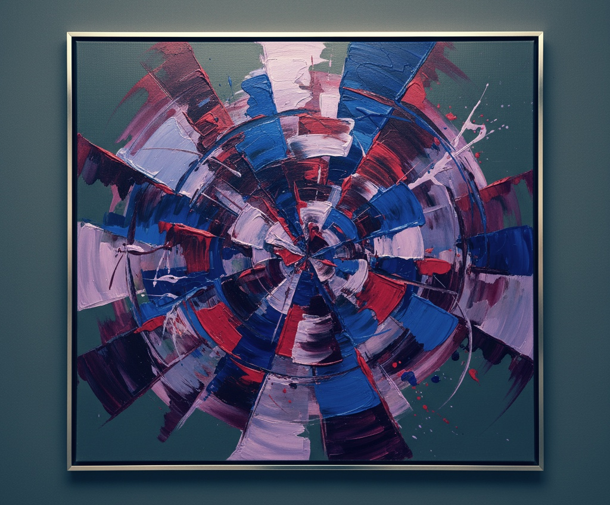

Red, Blue, Purple in Offensive Security
Red Team으로 일하며 부딪힌 현실과, Blue/Purple 사이에서의 고민
저는 기업에서 Red Team 포지션으로 일하는 보안 엔지니어입니다. 사람들이 흔히 생각하는 건 "시스템 뚫고 화려하게 해킹하는 사람들"이지만, 실제로 기업 안에서 하는 일은 훨씬 복잡합니다. 과연 기업에서의 Red Team은 진정한 Red Team으로 운영될까요? 단호히 말하자면, 어렵다고 봅니다. 오늘은 Red, Blue, Purple Team 간의 관계와 제 여러 고민에 대한 이야기를 하려고 합니다.
Red, Blue, Purple
Red, Blue, Purple은 사이버 보안에서 팀을 분류하는 대표적인 개념입니다. 모의해킹이나 공격자 관점의 업무를 수행하는 조직은 Red Team, CERT나 내부 통제처럼 방어를 기반으로 하는 부서는 Blue Team으로 불립니다. 이들이 긴밀히 협업하면 궁극적으로 Purple Team이라는 그림을 그립니다. 또한 Yellow, Green, Orange 등의 개념을 확장해 다양한 보안 부서를 정의하기도 합니다.
저는 Red Team에 속해 있지만, 회사라는 틀 안에서 "레드"답게 움직이기는 쉽지 않습니다.
Red Team in Company
기업이 보안팀을 두는 목적은 결국 보안을 강화하기 위해서입니다. 그러니 당연히 Blue 쪽 목표로 수렴할 수밖에 없죠. 우리가 공격 기술을 쓰더라도 결과적으로는 Purple, 아니면 거의 남색(Indigo)에 가까워집니다.
예를 들어 취약점을 발견했다고 해도 그냥 "이거 뚫립니다” 하고 끝내는 게 아니라, 보고서 쓰고, 서비스에 맞게 대응방안이나 완화방안을 만들고, 아키텍처까지 얘기하게 돼요. 그러다 보면 어느 순간 Red Team보다는 그냥 보안 엔지니어 쪽에 가까워집니다. 그래서 순수한 Red Team이라는 건 기업 환경에선 어렵다고 생각합니다.
From Red to Indigo
우리의 기술은 붉지만 환경은 우리를 보라색, 넘어가 남색으로 만듭니다. Red Team, 즉 Offensive Security Engineer 는 현실을 마주하게 됩니다. 순응한다면 점차 파란색이 되겠지만, 우리는 균형을 유지할 수 있습니다. 개인적인 노력들론 기술의 단절을 막기 위해 꾸준히 연구하고 공부하는 것일테고, 조직이나 문화적인 노력에선 더 Red스러운 일을 만들어야 합니다.
최근 한국에선 다양한 보안 사고로 인해 Red Team 이 점차 부각되고 있습니다. 그리고 일부는 정말 Red Team을 위한 일들을 포지션으로 만들고 있습니다. 이는 긍정적인 신호라고 생각합니다.
Go Purple?
기본적으로 기업에 속한 보안 엔지니어는 Blue Team 성향을 띌 수 밖에 없습니다. 이러한 상황에서 보라색을 바라보는 것은 더 진한 남색으로 가는 길이라고 생각합니다. 저는 그래서 오히려 "Purple Teamer가 되려면 Red를 더 깊이 파야 한다"고 생각각합니다. Red가 튼튼해야만 Purple다운 균형이 생기니까요.
10년 넘게 일하다 보니, 사실 매년 제 안에서 Offensive Security의 비중이 줄어든다는 느낌을 받습니다. 물론 취약점을 찾는 능력이나 침투 스킬은 예전보다 좋아졌지만… 그래도 뭔가 아쉽습니다.
연말까지 해야할 일(대부분 개발이겠죠)들이 많지만, 이런 고민을 계속될 것 같습니다. 결국 답은 단순하지 않은데, 그냥 "계속 빨간색을 놓지 않는 것"이 제 방식인 것 같습니다.

Red, Blue, Purple by Gemini